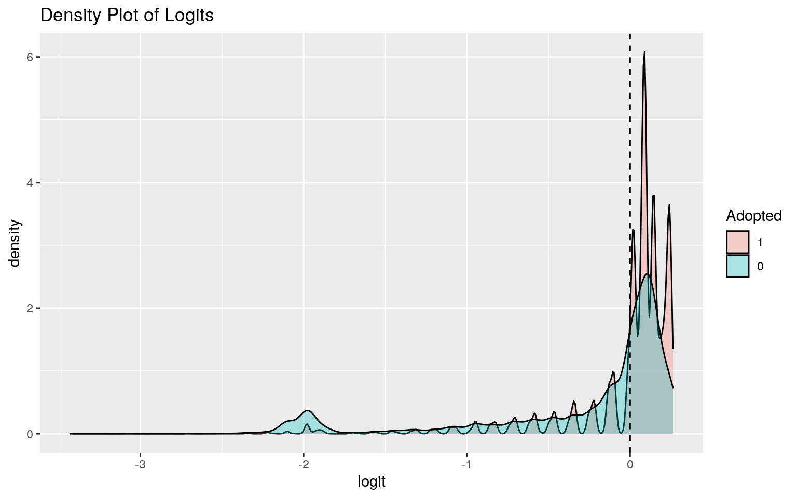

This project explores data from the Austin Animal Shelter from 2017-2019. The Austin Animal Center Shelter dataset was obtained by the Austin government's data portal (data.austintexas.gov), and contains the "outcomes of animals"(where they ended up) that were at the center. The date of the outcome, what the outcome was, and the name, ID, age, species, color, and sex of the animals are included. The entire dataset had 121,190 observations, but has been lessened down to 18,066 observations to only include animal outcomes from 2017-2019. Observations from 2020 have not been included in this project because of the effects of COVID-19 regulations and quarantine on the outcomes of animals from the shelter. Observations and trends from before 2020 will instead be the focus here.
shelter_all <- read.csv("https://drive.google.com/uc?export=download&id=1278cBre_l36-M_WUj8Bd66xrUywn-E0b")
#Tidy the shelter dataset. Drop the MonthYear column because it is a duplicate of DateTime.
#Remove all animals whose outcome was not in 2019
shelter<- shelter_all %>%separate(DateTime, into= c("date", "time", "type"), sep=" ") %>% select(-c(MonthYear, time, type)) %>% separate(date, into=c("month", "day","year"), convert=T)%>%filter(year==c(2017,2018,2019)) %>%arrange(year, month, day)
#adjust the age column so that it shows only by months old. Needs different calculation for day and year observations. Used 30 days for a month.
shelter<-shelter %>% separate(Age.upon.Outcome, into=c("age","type"))
shelter$age= as.double(shelter$age)
shelter<- shelter%>%mutate (age= ifelse(type=="year"|type=="years", age*12, age)) %>% mutate (age= ifelse(type=="day"|type=="days", age/30, age)) %>% mutate (age= ifelse(type=="week"|type=="weeks", age/4, age)) %>%select(-("type"))
shelter<-shelter%>%na.omit
glimpse(shelter)## Rows: 18,066
## Columns: 13
## $ Animal.ID <fct> A708359, A741099, A741385, A704101,
A740704, A740558, A740581, A740820, …
## $ Name <fct> Ganja, Tucker, Banks, Lobo, Billy, , , ,
Woofie, Canelo, *Mozart, Colby,…
## $ month <int> 1, 1, 1, 1, 1, 1, 1, 1, 1, 1, 1, 1, 1, 1,
1, 1, 1, 1, 1, 1, 1, 1, 1, 1, …
## $ day <int> 1, 1, 1, 1, 1, 1, 1, 1, 1, 2, 2, 2, 2, 2, 2,
2, 2, 2, 2, 2, 2, 2, 2, 2, …
## $ year <int> 2017, 2017, 2017, 2017, 2017, 2017, 2017,
2017, 2017, 2017, 2017, 2017, …
## $ Date.of.Birth <fct> 01/26/2015, 10/28/2016,
01/01/2005, 06/01/2013, 12/21/2014, 12/19/2014, …
## $ Outcome.Type <fct> Adoption, Adoption, Return to
Owner, Return to Owner, Return to Owner, D…
## $ Outcome.Subtype <fct> , , , , , , , , , , Foster,
Foster, , , , , , , , , , , , , , , , , Suff…
## $ Animal.Type <fct> Dog, Dog, Dog, Dog, Dog, Dog, Cat,
Cat, Dog, Dog, Other, Dog, Cat, Dog, …
## $ Sex.upon.Outcome <fct> Spayed Female, Intact Male,
Neutered Male, Intact Male, Intact Male, Int…
## $ age <dbl> 12, 2, 144, 36, 24, 24, 6, 12, 36, 9, 4, 24,
3, 36, 12, 9, 2, 8, 96, 12,…
## $ Breed <fct> Pit Bull/Labrador Retriever, Beagle Mix,
Labrador Retriever Mix, Siberia…
## $ Color <fct> Black/Brown, Brown/White, Chocolate,
Black/White, Blue, Brown, Calico, B…The data here has been cleaned and the "date" (of the outcome) variable has been split into month, day, and year. The ages of the animals have been adjusted to all be in month units.
shelter<-shelter %>%filter(Outcome.Type!="") %>% droplevels
#month of outcome and age vs animal type
man1<-manova(cbind(month,age)~Animal.Type, data=shelter)
summary(man1)## Df Pillai approx F num Df den Df Pr(>F)
## Animal.Type 3 0.044883 138.21 6 36124 < 2.2e-16 ***
## Residuals 18062
## ---
## Signif. codes: 0 '***' 0.001 '**' 0.01 '*' 0.05 '.' 0.1
' ' 1#univariate ANOVA
summary.aov(man1) ## Response month :
## Df Sum Sq Mean Sq F value Pr(>F)
## Animal.Type 3 1683 560.99 52.45 < 2.2e-16 ***
## Residuals 18062 193184 10.70
## ---
## Signif. codes: 0 '***' 0.001 '**' 0.01 '*' 0.05 '.' 0.1
' ' 1
##
## Response age :
## Df Sum Sq Mean Sq F value Pr(>F)
## Animal.Type 3 806323 268774 232.17 < 2.2e-16 ***
## Residuals 18062 20909998 1158
## ---
## Signif. codes: 0 '***' 0.001 '**' 0.01 '*' 0.05 '.' 0.1
' ' 1shelter%>%group_by(Animal.Type)%>%na.omit%>%summarize(mean(month), mean(age))## # A tibble: 4 x 3
## Animal.Type `mean(month)` `mean(age)`
## <fct> <dbl> <dbl>
## 1 Bird 7.32 14.9
## 2 Cat 7.04 17.1
## 3 Dog 6.52 30.5
## 4 Other 5.94 16.1#t-tests
pairwise.t.test(shelter$month, shelter$Animal.Type, p.adj="none")##
## Pairwise comparisons using t tests with pooled SD
##
## data: shelter$month and shelter$Animal.Type
##
## Bird Cat Dog
## Cat 0.37 - -
## Dog 0.01 < 2e-16 -
## Other 3.0e-05 < 2e-16 5.2e-07
##
## P value adjustment method: nonepairwise.t.test(shelter$age, shelter$Animal.Type, p.adj="none")##
## Pairwise comparisons using t tests with pooled SD
##
## data: shelter$age and shelter$Animal.Type
##
## Bird Cat Dog
## Cat 0.49 - -
## Dog 1.8e-06 < 2e-16 -
## Other 0.73 0.38 < 2e-16
##
## P value adjustment method: none#number of tests
3+12## [1] 15#bonferroni correction
1-((0.95)^15)## [1] 0.5367088bon<- 0.05/15
bon## [1] 0.003333333#check assumptions
library(rstatix)
set.seed(1234)
#random sample groups that are >5000 for the shapiro test
adop_shelter <- shelter %>% filter(Animal.Type=="Dog") %>% sample_n(5000)
trans_shelter <- shelter %>% filter(Animal.Type=="Cat") %>% sample_n(5000)
temp_shelter<- shelter[!(shelter$Animal.Type=="Dog" | shelter$Animal.Type=="Cat"),]
temp_shelter<- temp_shelter %>% full_join(adop_shelter) %>%full_join(trans_shelter)
group <- temp_shelter$Animal.Type
DVs <- temp_shelter %>% select(month, age)
sapply(split(DVs,group), mshapiro_test)## Bird Cat Dog Other
## statistic 0.373192 0.5905641 0.7987942 0.7426829
## p.value 1.375227e-19 6.893596e-76 1.057165e-61
9.739319e-35One MANOVA test, two univariate ANOVA tests, and twelve pairwise t-tests were conducted on month and age variables across different animal types (Animal.Type) for a total of fifteen tests. MANOVA test was found to be significant and both univariate ANOVA tests as well (p<0.05). There is a proportion of 0.5367088 or about 53.67% probability of a type I error from these tests. With the bonferroni correction of 0.0033 used to adjust for multiple comparisons, the "Other" group appears to have a signifcant difference in the mean month of its outcome compared to the Bird, Cat, and Dog groups. The Cat group also appears to have a significant difference in the mean month from the Dog group. For ages, the Cat, Bird, and 'Other' groups have significant mean differences in age from the Dog group.
Since all p-values from the Shapiro-Wilk normality test are less than 0.05, there is no need to test homogeneity and the assumptions for MANOVA are met. Multivariate normality can be assumed to be met.
Null Hypothesis: The mean age of adopted cats is the same as that of adopted dogs. Alternative Hypothesis: The mean age of adopted cats is different from that of adopted dogs.
#randomized test of mean differences in age of adopted dogs vs cats
adopted_animals<- shelter %>% filter(Outcome.Type=="Adoption")
cat_shelter<- adopted_animals %>%filter(Animal.Type=="Cat") %>% select(Animal.Type,age)
dog_shelter<- adopted_animals %>%filter(Animal.Type=="Dog") %>% select(Animal.Type,age)
cat_dog_shelter<- cat_shelter %>%full_join(dog_shelter)
#set seed so result will be consistent
set.seed(1234)
rand_dist<-vector()
for(i in 1:5000){
new<-data.frame(age=sample(cat_dog_shelter$age),Animal.Type=cat_dog_shelter$Animal.Type)
rand_dist[i]<-mean(new[new$Animal.Type=="Dog",]$age)-
mean(new[new$Animal.Type=="Cat",]$age)
}
obs_diff<- cat_dog_shelter%>%group_by(Animal.Type)%>%
summarize(means=mean(age))%>%summarize(`mean_diff`=diff(means)) %>%pull
obs_diff## [1] 8.645459mean(rand_dist>obs_diff | rand_dist < -(obs_diff)) ## [1] 0A randomized t-test was conducted to find if there was a significant mean difference in age between adopted cats and dogs. The observed test statistic was 8.645459 months. Using this statistic compared to the randomized distribution, the probability of observing a mean difference like the one obtained in the random distribution is found to be 0. The resulting p-value is 0, indicating a strong mean difference and rejection of the null hypothesis.
{hist(rand_dist,main="Randomized Distribution of Ages of Adopted Cats and Dogs",ylab="", xlim=c(-9,9)); abline(v = c(obs_diff,-obs_diff),col="red")}#Perform linear regression of age at adoption outcome dependent on sex and animal species
adopted_animals<- shelter %>% filter(Outcome.Type=="Adoption")
fit1<-lm(age~Animal.Type*Sex.upon.Outcome, data=adopted_animals)
summary(fit1)##
## Call:
## lm(formula = age ~ Animal.Type * Sex.upon.Outcome, data
= adopted_animals)
##
## Residuals:
## Min 1Q Median 3Q Max
## -24.743 -14.356 -11.140 0.193 211.644
##
## Coefficients: (4 not defined because of singularities)
## Estimate Std. Error t value Pr(>|t|)
## (Intercept) 13.500 10.214 1.322 0.1863
## Animal.TypeCat -10.225 10.623 -0.963 0.3358
## Animal.TypeDog 8.206 10.798 0.760 0.4473
## Animal.TypeOther 9.417 13.186 0.714 0.4752
## Sex.upon.OutcomeIntact Male -0.900 13.704 -0.066 0.9476
## Sex.upon.OutcomeNeutered Male -8.944 9.630 -0.929 0.3530
## Sex.upon.OutcomeSpayed Female -1.125 10.214 -0.110
0.9123
## Sex.upon.OutcomeUnknown -1.875 12.085 -0.155 0.8767
## Animal.TypeCat:Sex.upon.OutcomeIntact Male 0.198 14.442
0.014 0.9891
## Animal.TypeDog:Sex.upon.OutcomeIntact Male 4.937 14.538
0.340 0.7341
## Animal.TypeOther:Sex.upon.OutcomeIntact Male -11.392
17.593 -0.648 0.5173
## Animal.TypeCat:Sex.upon.OutcomeNeutered Male 18.809
10.090 1.864 0.0623 .
## Animal.TypeDog:Sex.upon.OutcomeNeutered Male 11.046
10.264 1.076 0.2819
## Animal.TypeOther:Sex.upon.OutcomeNeutered Male NA NA NA
NA
## Animal.TypeCat:Sex.upon.OutcomeSpayed Female 14.206
10.647 1.334 0.1821
## Animal.TypeDog:Sex.upon.OutcomeSpayed Female 1.279
10.814 0.118 0.9059
## Animal.TypeOther:Sex.upon.OutcomeSpayed Female NA NA NA
NA
## Animal.TypeCat:Sex.upon.OutcomeUnknown NA NA NA NA
## Animal.TypeDog:Sex.upon.OutcomeUnknown NA NA NA NA
## Animal.TypeOther:Sex.upon.OutcomeUnknown -11.442 16.470
-0.695 0.4873
## ---
## Signif. codes: 0 '***' 0.001 '**' 0.01 '*' 0.05 '.' 0.1
' ' 1
##
## Residual standard error: 28.89 on 8480 degrees of
freedom
## Multiple R-squared: 0.0263, Adjusted R-squared: 0.02458
## F-statistic: 15.27 on 15 and 8480 DF, p-value: < 2.2e-16The mean predicted age for adopted intact female birds is 13.5 months. Average adopted cats are predicted to be 10.225 months younger than the adopted intact female birds. Average adopted dogs are predicted to be 8.206 months older than the adopted intact female birds. Average animals in the 'Other' category are predicted to be 9.417 months older than adopted intact female birds. Average intact male animals are predicted to be 0.9 months younger than adopted intact female birds (referred to as the reference group from this point on). Average neutured male animals are predicted to be 8.944 months younger than the reference group. Average spayed female animals are predicted to be 1.125 months younger than the reference group. Animals with unknown sex are predicted to be 1.875 months younger than the reference.
For the interactions, slope of the Sex.Upon.Outcome category unit for intact male cats is 0.198 greater than intact female birds at average age. Slope of the Sex.Upon.Outcome category unit for intact male dogs is 4.937 greater than intact female birds at average age. Slope of the Sex.Upon.Outcome category unit for intact male animals in the 'Other' group is 11.392 less than intact female birds at average age. Slope of the Sex.Upon.Outcome category unit for neutured male cats is 18.809 greater than intact female birds at average age. Slope of the Sex.Upon.Outcome category unit for neutured male dogs is 11.046 greater than intact female birds at average age. Slope of the Sex.Upon.Outcome category unit for spayed female cats is 14.206 greater than intact female birds at average age. Slope of the Sex.Upon.Outcome category unit for spayed female dogs is 1.279 month greater than intact female birds at average age. Slope of the Sex.Upon.Outcome category unit for animals in the 'Other' category with unknown sex is 11.442 less than intact female birds at average age.
library(interactions)
#plot of categorical regression
cat_plot(fit1, pred = Animal.Type, modx = Sex.upon.Outcome, main="Linear Regression of Age Dependent on Sex and Animal Type",
plot.points = TRUE, geom = "line", interval = TRUE) + scale_y_continuous()#plot of categorical regression with geom_smooth
cat_plot(fit1, pred = Animal.Type, modx = Sex.upon.Outcome, main="Linear Regression of Age Dependent on Sex and Animal Type",
plot.points = TRUE, geom = "line", interval = TRUE)+ geom_smooth(method="lm") + scale_y_continuous()#Check assumptions of linearity, normality, and homoskedasticity
resids<-fit1$residual
ggplot()+geom_histogram(aes(resids),bins=10)+ggtitle("Residuals")fitted<-fit1$fitted.values
ggplot()+geom_point(aes(fitted,resids)) +ggtitle("Residuals vs Fitted")resids<-fit1$residuals
fitvals<-fit1$fitted.values
ggplot()+geom_point(aes(fitvals,resids))+geom_hline(yintercept=0, color='red')+ggtitle("Homoskedasticity Check")#hypothesis test
library(sandwich); library(lmtest)
fit1<-lm(age~Animal.Type*Sex.upon.Outcome, data=adopted_animals)
bptest(fit1) ##
## studentized Breusch-Pagan test
##
## data: fit1
## BP = 34.126, df = 15, p-value = 0.003269The histogram of residuals does not appear normal, and is skewed right. The variance of the residuals vs. fitted plot does not look constant, and there also appears to be a violation in homoskedasticity. The Breusch-Pagan test confirms that this model is heteroskedatic, with a p-value of 0.0033.
#Regression with robust standard errors.
summary(fit1)##
## Call:
## lm(formula = age ~ Animal.Type * Sex.upon.Outcome, data
= adopted_animals)
##
## Residuals:
## Min 1Q Median 3Q Max
## -24.743 -14.356 -11.140 0.193 211.644
##
## Coefficients: (4 not defined because of singularities)
## Estimate Std. Error t value Pr(>|t|)
## (Intercept) 13.500 10.214 1.322 0.1863
## Animal.TypeCat -10.225 10.623 -0.963 0.3358
## Animal.TypeDog 8.206 10.798 0.760 0.4473
## Animal.TypeOther 9.417 13.186 0.714 0.4752
## Sex.upon.OutcomeIntact Male -0.900 13.704 -0.066 0.9476
## Sex.upon.OutcomeNeutered Male -8.944 9.630 -0.929 0.3530
## Sex.upon.OutcomeSpayed Female -1.125 10.214 -0.110
0.9123
## Sex.upon.OutcomeUnknown -1.875 12.085 -0.155 0.8767
## Animal.TypeCat:Sex.upon.OutcomeIntact Male 0.198 14.442
0.014 0.9891
## Animal.TypeDog:Sex.upon.OutcomeIntact Male 4.937 14.538
0.340 0.7341
## Animal.TypeOther:Sex.upon.OutcomeIntact Male -11.392
17.593 -0.648 0.5173
## Animal.TypeCat:Sex.upon.OutcomeNeutered Male 18.809
10.090 1.864 0.0623 .
## Animal.TypeDog:Sex.upon.OutcomeNeutered Male 11.046
10.264 1.076 0.2819
## Animal.TypeOther:Sex.upon.OutcomeNeutered Male NA NA NA
NA
## Animal.TypeCat:Sex.upon.OutcomeSpayed Female 14.206
10.647 1.334 0.1821
## Animal.TypeDog:Sex.upon.OutcomeSpayed Female 1.279
10.814 0.118 0.9059
## Animal.TypeOther:Sex.upon.OutcomeSpayed Female NA NA NA
NA
## Animal.TypeCat:Sex.upon.OutcomeUnknown NA NA NA NA
## Animal.TypeDog:Sex.upon.OutcomeUnknown NA NA NA NA
## Animal.TypeOther:Sex.upon.OutcomeUnknown -11.442 16.470
-0.695 0.4873
## ---
## Signif. codes: 0 '***' 0.001 '**' 0.01 '*' 0.05 '.' 0.1
' ' 1
##
## Residual standard error: 28.89 on 8480 degrees of
freedom
## Multiple R-squared: 0.0263, Adjusted R-squared: 0.02458
## F-statistic: 15.27 on 15 and 8480 DF, p-value: < 2.2e-16coeftest(fit1, vcov = vcovHC(fit1))##
## t test of coefficients:
##
## Estimate Std. Error t value Pr(>|t|)
## (Intercept) 13.50000 1.60357 8.4187 < 2.2e-16 ***
## Animal.TypeCat -10.22449 1.71228 -5.9713 2.449e-09 ***
## Animal.TypeDog 8.20588 4.16985 1.9679 0.04911 *
## Animal.TypeOther 9.41667 7.57337 1.2434 0.21376
## Sex.upon.OutcomeIntact Male -0.90000 2.72774 -0.3299
0.74145
## Sex.upon.OutcomeNeutered Male -8.94444 7.61084 -1.1752
0.23994
## Sex.upon.OutcomeSpayed Female -1.12500 9.71668 -0.1158
0.90783
## Sex.upon.OutcomeUnknown -1.87500 2.34888 -0.7983 0.42475
## Animal.TypeCat:Sex.upon.OutcomeIntact Male 0.19802
2.84403 0.0696 0.94449
## Animal.TypeDog:Sex.upon.OutcomeIntact Male 4.93736
6.45001 0.7655 0.44401
## Animal.TypeOther:Sex.upon.OutcomeIntact Male -11.39167
8.27537 -1.3766 0.16868
## Animal.TypeCat:Sex.upon.OutcomeNeutered Male 18.80858
7.66505 2.4538 0.01416 *
## Animal.TypeDog:Sex.upon.OutcomeNeutered Male 11.04568
8.54966 1.2919 0.19641
## Animal.TypeCat:Sex.upon.OutcomeSpayed Female 14.20590
9.76508 1.4548 0.14577
## Animal.TypeDog:Sex.upon.OutcomeSpayed Female 1.27880
10.46813 0.1222 0.90277
## Animal.TypeOther:Sex.upon.OutcomeUnknown -11.44167
7.93749 -1.4415 0.14949
## ---
## Signif. codes: 0 '***' 0.001 '**' 0.01 '*' 0.05 '.' 0.1
' ' 1After applying robust standard errors, the standard errors appeared to have decreased for all groups and interactions and the t-values have increased. The p-value for most groups appears to have also decreased, making some coefficient relationships significant. The intercept, Cat, Dog, and interaction of Neutered Male Cats appear to have become significant, with p-values less than 0.05.
The mean predicted age for adopted intact female birds is 13.5 months. Average adopted cats are predicted to be 10.225 months younger than the adopted intact female birds. Average adopted dogs are predicted to be 8.206 months older than the adopted intact female birds. Slope of the Sex.Upon.Outcome category unit for neutured male cats is 18.809 greater than intact female birds at average age.
#proportion of variation in the outcome model explains
age<- adopted_animals$age %>%na.omit
(sum((age-mean(age))^2)-sum(fit1$residuals^2))/sum((age-mean(age))^2)## [1] 0.02629751The model appears to explain 2.63% of the variation in the outcome.
set.seed(1234)
boot_dat<- sample_frac(adopted_animals, replace=T)
samp_distn<-replicate(5000, {
boot_dat <- sample_frac(adopted_animals, replace=T) #take bootstrap sample of rows
fit <- lm(age~Animal.Type*Sex.upon.Outcome, data=boot_dat) #fit model on bootstrap sample
coef(fit) #save coefs
})
## Estimated SEs
samp_distn %>% t %>% as.data.frame %>% summarize_all(sd)## (Intercept) Animal.TypeCat Animal.TypeDog
Animal.TypeOther Sex.upon.OutcomeIntact Male
## 1 1.504113 1.61901 4.017839 7.344154 2.59979
## Sex.upon.OutcomeNeutered Male Sex.upon.OutcomeSpayed
Female Sex.upon.OutcomeUnknown
## 1 7.425089 9.434293 2.274715
## Animal.TypeCat:Sex.upon.OutcomeIntact Male
Animal.TypeDog:Sex.upon.OutcomeIntact Male
## 1 2.713393 6.303462
## Animal.TypeOther:Sex.upon.OutcomeIntact Male
Animal.TypeCat:Sex.upon.OutcomeNeutered Male
## 1 8.040092 7.495828
## Animal.TypeDog:Sex.upon.OutcomeNeutered Male
Animal.TypeOther:Sex.upon.OutcomeNeutered Male
## 1 8.323009 NA
## Animal.TypeCat:Sex.upon.OutcomeSpayed Female
Animal.TypeDog:Sex.upon.OutcomeSpayed Female
## 1 9.483318 10.14111
## Animal.TypeOther:Sex.upon.OutcomeSpayed Female
Animal.TypeCat:Sex.upon.OutcomeUnknown
## 1 NA NA
## Animal.TypeDog:Sex.upon.OutcomeUnknown
Animal.TypeOther:Sex.upon.OutcomeUnknown
## 1 NA NAThe bootstrapped standard errors obtained from resampling observations appear smaller than the original standard errors and the robust standard errors. This would mean the data have the least variability using the bootstrapped standard errors compared to the robust or original standard errors.
#species and age vs adopted or not
shelter<-shelter %>% mutate(Adopted= ifelse(Outcome.Type=="Adoption", 1, 0))
shelter<-shelter %>%na.omit
fit<-glm(Adopted~Animal.Type+age, data=shelter, family="binomial")
summary(fit)##
## Call:
## glm(formula = Adopted ~ Animal.Type + age, family =
"binomial",
## data = shelter)
##
## Deviance Residuals:
## Min 1Q Median 3Q Max
## -1.2906 -1.1861 -0.5085 1.1394 2.6315
##
## Coefficients:
## Estimate Std. Error z value Pr(>|z|)
## (Intercept) -0.4976636 0.2011317 -2.474 0.013349 *
## Animal.TypeCat 0.6079428 0.2025095 3.002 0.002682 **
## Animal.TypeDog 0.7597661 0.2021587 3.758 0.000171 ***
## Animal.TypeOther -1.3617139 0.2267761 -6.005 1.92e-09
***
## age -0.0100717 0.0004959 -20.310 < 2e-16 ***
## ---
## Signif. codes: 0 '***' 0.001 '**' 0.01 '*' 0.05 '.' 0.1
' ' 1
##
## (Dispersion parameter for binomial family taken to be 1)
##
## Null deviance: 24981 on 18065 degrees of freedom
## Residual deviance: 23982 on 18061 degrees of freedom
## AIC: 23992
##
## Number of Fisher Scoring iterations: 4exp(coef(fit))## (Intercept) Animal.TypeCat Animal.TypeDog
Animal.TypeOther age
## 0.6079494 1.8366492 2.1377762 0.2562213 0.9899788prob <- predict(fit,type="response")
#confusion matrix
table(predict=as.numeric(prob>.5),truth=shelter$Adopted)%>%addmargins## truth
## predict 0 1 Sum
## 0 4349 2070 6419
## 1 5221 6426 11647
## Sum 9570 8496 18066class_diag<-function(probs,truth){
tab<-table(factor(probs>.5,levels=c("FALSE","TRUE")),truth)
acc=sum(diag(tab))/sum(tab)
sens=tab[2,2]/colSums(tab)[2]
spec=tab[1,1]/colSums(tab)[1]
ppv=tab[2,2]/rowSums(tab)[2]
f1=2*(sens*ppv)/(sens+ppv)
if(is.numeric(truth)==FALSE & is.logical(truth)==FALSE){
truth<-as.numeric(truth)-1}
#CALCULATE EXACT AUC
ord<-order(probs, decreasing=TRUE)
probs <- probs[ord]; truth <- truth[ord]
TPR=cumsum(truth)/max(1,sum(truth))
FPR=cumsum(!truth)/max(1,sum(!truth))
dup<-c(probs[-1]>=probs[-length(probs)], FALSE)
TPR<-c(0,TPR[!dup],1); FPR<-c(0,FPR[!dup],1)
n <- length(TPR)
auc<- sum( ((TPR[-1]+TPR[-n])/2) * (FPR[-1]-FPR[-n]) )
data.frame(acc,sens,spec,ppv,f1,auc)
}
class_diag(prob, shelter$Adopted)## acc sens spec ppv f1 auc
## 1 0.5964242 0.7563559 0.454441 0.5517301 0.638038
0.6212205#density plot of logit
shelter$logit<-predict(fit)
shelter %>% mutate(Adopted=factor(Adopted,levels=c(1,0))) %>%
ggplot(aes(logit, fill=Adopted))+geom_density(alpha=.3)+
geom_vline(xintercept=0,lty=2) + ggtitle("Density Plot of Logits")
#ROC and AUC
library(plotROC)
ROCplot<-ggplot(shelter)+geom_roc(aes(d=Adopted,m=prob), n.cuts=0) + ggtitle("ROC of Adopted Animal and Age")
ROCplotcalc_auc(ROCplot)## PANEL group AUC
## 1 1 -1 0.6212205shelter<-shelter%>%select(-(logit))Controlling for age, Birds compared to both dogs and cats are significantly different in their odds of being adopted. For every 1 month increase in age, the odds of a cat being adopted compared to birds significantly increases by 1.8366 times. For every 1 month increase in age, the odds of a dog being adopted compared to birds significantly increases by 2.1377762 times. For every 1 month increase in age, the odds of a an animal in the 'Other' category being adopted compared to birds significantly decreases by 0.2562213 times. Controlling for animal type, it appears that birds have a significantly less odds of being adopted with increasing age.
The accuracy of the model is 0.5964, which indicates that about a proportion of 0.5964 of the predicted cases were correctly classified as being adopted. A proportion of 0.7563559 of the animals were correctly predicted as being adopted (sensitivity). A proportion of 0.454441 of the animals were correctly predicted as not being adopted (specificity). The precision of the model indicates that a proportion of 0.5517301 of the animals were classified as adopted who actually were adopted. The AUC of this model was 0.6212205, which indicates it is a poor predictor of the whether or not an animal is adopted based off its age and type of animal.
The ROC curve displays the poor predictability of this model and the AUC of 0.6212205. It is almost even linear as a line, as the AUC is close to 0.5 and is the area under the curve. This ROC curve and density plot indicate that almost half of the predicted cases were not correctly predicted as adopted.
fit_all<-glm(Adopted~month+day+year+Animal.Type+Sex.upon.Outcome+age+Color, data=shelter, family="binomial")
summary(fit_all)##
## Call:
## glm(formula = Adopted ~ month + day + year + Animal.Type
+ Sex.upon.Outcome +
## age + Color, family = "binomial", data = shelter)
##
## Deviance Residuals:
## Min 1Q Median 3Q Max
## -2.8157 -0.4341 -0.1112 0.7043 3.5389
##
## Coefficients:
## Estimate Std. Error z value Pr(>|z|)
## (Intercept) -2.218e+02 1.456e+03 -0.152 0.8790
## month 3.231e-02 6.153e-03 5.251 1.51e-07 ***
## day 3.947e-03 2.317e-03 1.703 0.0886 .
## year 1.174e-01 2.485e-02 4.725 2.30e-06 ***
## Animal.TypeCat -3.240e+00 3.128e-01 -10.357 < 2e-16 ***
## Animal.TypeDog -3.647e+00 3.073e-01 -11.867 < 2e-16 ***
## Animal.TypeOther -1.627e+00 3.244e-01 -5.015 5.30e-07
***
## Sex.upon.OutcomeIntact Male -1.462e-01 1.188e-01 -1.231
0.2184
## Sex.upon.OutcomeNeutered Male 3.831e+00 9.016e-02 42.491
< 2e-16 ***
## Sex.upon.OutcomeSpayed Female 4.096e+00 9.008e-02 45.465
< 2e-16 ***
## Sex.upon.OutcomeUnknown -2.605e+00 2.551e-01 -10.212 <
2e-16 ***
## age -2.011e-02 6.158e-04 -32.657 < 2e-16 ***
## ColorApricot -1.427e+01 1.455e+03 -0.010 0.9922
## ColorApricot/White -1.540e+01 1.455e+03 -0.011 0.9916
## ColorBlack -1.467e+01 1.455e+03 -0.010 0.9920
## ColorBlack Brindle -1.410e+01 1.455e+03 -0.010 0.9923
## ColorBlack Brindle/Black -4.899e-02 1.680e+03 0.000
1.0000
## ColorBlack Brindle/Brown -1.537e+01 1.455e+03 -0.011
0.9916
## ColorBlack Brindle/Tan -1.926e-01 2.058e+03 0.000 0.9999
## ColorBlack Brindle/White -1.543e+01 1.455e+03 -0.011
0.9915
## ColorBlack Smoke -1.392e+01 1.455e+03 -0.010 0.9924
## ColorBlack Smoke/Chocolate -1.995e+00 2.058e+03 -0.001
0.9992
## ColorBlack Smoke/White -1.396e+01 1.455e+03 -0.010
0.9923
## ColorBlack Tabby -1.446e+01 1.455e+03 -0.010 0.9921
## ColorBlack Tabby/Gray -3.118e+01 2.058e+03 -0.015 0.9879
## ColorBlack Tabby/Gray Tabby -2.511e+01 2.058e+03 -0.012
0.9903
## ColorBlack Tabby/White -1.453e+01 1.455e+03 -0.010
0.9920
## ColorBlack Tiger -4.835e-01 1.679e+03 0.000 0.9998
## ColorBlack/Black -1.464e+01 1.455e+03 -0.010 0.9920
## ColorBlack/Black Brindle 3.050e+00 1.593e+03 0.002
0.9985
## ColorBlack/Black Smoke -1.365e+01 1.455e+03 -0.009
0.9925
## ColorBlack/Blue 4.022e-01 2.058e+03 0.000 0.9998
## ColorBlack/Blue Tick -1.530e+01 1.455e+03 -0.011 0.9916
## ColorBlack/Brown -1.419e+01 1.455e+03 -0.010 0.9922
## ColorBlack/Brown Brindle -1.261e+01 1.455e+03 -0.009
0.9931
## ColorBlack/Brown Tabby -2.511e+01 2.058e+03 -0.012
0.9903
## ColorBlack/Chocolate -3.099e+01 2.058e+03 -0.015 0.9880
## ColorBlack/Cream -1.445e+01 1.455e+03 -0.010 0.9921
## ColorBlack/Fawn -1.327e+01 1.455e+03 -0.009 0.9927
## ColorBlack/Gold 5.883e-01 2.058e+03 0.000 0.9998
## ColorBlack/Gray -1.428e+01 1.455e+03 -0.010 0.9922
## ColorBlack/Green -3.067e+01 2.058e+03 -0.015 0.9881
## ColorBlack/Orange -1.318e+01 1.455e+03 -0.009 0.9928
## ColorBlack/Red -1.450e+01 1.455e+03 -0.010 0.9920
## ColorBlack/Silver -1.404e+01 1.455e+03 -0.010 0.9923
## ColorBlack/Tan -1.432e+01 1.455e+03 -0.010 0.9921
## ColorBlack/Tortie -2.788e+01 2.058e+03 -0.014 0.9892
## ColorBlack/Tricolor -1.434e+01 1.455e+03 -0.010 0.9921
## ColorBlack/White -1.441e+01 1.455e+03 -0.010 0.9921
## ColorBlue -1.429e+01 1.455e+03 -0.010 0.9922
## ColorBlue Cream -1.337e+01 1.455e+03 -0.009 0.9927
## ColorBlue Cream/Tortie -2.726e+01 2.058e+03 -0.013
0.9894
## ColorBlue Cream/White -2.800e+01 2.058e+03 -0.014 0.9891
## ColorBlue Merle -1.427e+01 1.455e+03 -0.010 0.9922
## ColorBlue Merle/Black -2.728e+01 2.058e+03 -0.013 0.9894
## ColorBlue Merle/Brown -2.833e+01 1.714e+03 -0.017 0.9868
## ColorBlue Merle/Tan -1.535e+01 1.455e+03 -0.011 0.9916
## ColorBlue Merle/Tricolor -2.905e+01 1.690e+03 -0.017
0.9863
## ColorBlue Merle/White -1.397e+01 1.455e+03 -0.010 0.9923
## ColorBlue Point -1.534e+01 1.455e+03 -0.011 0.9916
## ColorBlue Point/Cream 1.139e+00 2.058e+03 0.001 0.9996
## ColorBlue Smoke/Gray -5.318e-01 2.058e+03 0.000 0.9998
## ColorBlue Smoke/White -1.335e+01 1.455e+03 -0.009 0.9927
## ColorBlue Tabby -1.434e+01 1.455e+03 -0.010 0.9921
## ColorBlue Tabby/Cream -4.054e-01 2.058e+03 0.000 0.9998
## ColorBlue Tabby/White -1.440e+01 1.455e+03 -0.010 0.9921
## ColorBlue Tick -1.436e+01 1.455e+03 -0.010 0.9921
## ColorBlue Tick/Black -1.524e+01 1.455e+03 -0.010 0.9916
## ColorBlue Tick/Brown -2.735e+01 1.782e+03 -0.015 0.9878
## ColorBlue Tick/Red -4.772e-01 2.058e+03 0.000 0.9998
## ColorBlue Tick/Tan 5.791e-01 1.677e+03 0.000 0.9997
## ColorBlue Tick/Tricolor -2.928e+01 1.625e+03 -0.018
0.9856
## ColorBlue Tick/White -1.447e+01 1.455e+03 -0.010 0.9921
## ColorBlue Tiger/White -1.321e+01 1.455e+03 -0.009 0.9928
## ColorBlue/Black -1.443e+01 1.455e+03 -0.010 0.9921
## ColorBlue/Black Brindle -3.058e+01 2.058e+03 -0.015
0.9881
## ColorBlue/Brown 9.142e-01 2.058e+03 0.000 0.9996
## ColorBlue/Brown Brindle -3.135e+01 2.058e+03 -0.015
0.9878
## ColorBlue/Cream -3.095e+01 2.058e+03 -0.015 0.9880
## ColorBlue/Gray -1.408e+01 1.455e+03 -0.010 0.9923
## ColorBlue/Orange -2.225e+00 2.058e+03 -0.001 0.9991
## ColorBlue/Tan -1.549e+01 1.455e+03 -0.011 0.9915
## ColorBlue/Tortie -1.434e+01 1.455e+03 -0.010 0.9921
## ColorBlue/Tricolor 2.760e-01 2.058e+03 0.000 0.9999
## ColorBlue/White -1.450e+01 1.455e+03 -0.010 0.9921
## ColorBrown -1.462e+01 1.455e+03 -0.010 0.9920
## ColorBrown Brindle -1.436e+01 1.455e+03 -0.010 0.9921
## ColorBrown Brindle/Black -1.528e+01 1.455e+03 -0.011
0.9916
## ColorBrown Brindle/Brown -1.351e+01 1.455e+03 -0.009
0.9926
## ColorBrown Brindle/Brown Brindle 1.209e-01 2.058e+03
0.000 1.0000
## ColorBrown Brindle/Gray -3.061e+01 2.058e+03 -0.015
0.9881
## ColorBrown Brindle/Liver Tick -2.732e+01 2.058e+03
-0.013 0.9894
## ColorBrown Brindle/Tan 1.374e+00 2.058e+03 0.001 0.9995
## ColorBrown Brindle/White -1.427e+01 1.455e+03 -0.010
0.9922
## ColorBrown Merle -1.477e+01 1.455e+03 -0.010 0.9919
## ColorBrown Merle/Brown 2.950e-01 2.058e+03 0.000 0.9999
## ColorBrown Merle/Gray -3.110e+01 2.058e+03 -0.015 0.9879
## ColorBrown Merle/White -1.456e+01 1.455e+03 -0.010
0.9920
## ColorBrown Tabby -1.450e+01 1.455e+03 -0.010 0.9921
## ColorBrown Tabby/Black -1.571e+01 1.455e+03 -0.011
0.9914
## ColorBrown Tabby/Brown -1.574e+01 1.455e+03 -0.011
0.9914
## ColorBrown Tabby/Cream 3.842e+00 2.058e+03 0.002 0.9985
## ColorBrown Tabby/Gray -3.119e+01 2.058e+03 -0.015 0.9879
## ColorBrown Tabby/Silver -5.893e-01 2.058e+03 0.000
0.9998
## ColorBrown Tabby/Tortie -6.697e-01 2.058e+03 0.000
0.9997
## ColorBrown Tabby/White -1.461e+01 1.455e+03 -0.010
0.9920
## ColorBrown Tiger -1.544e+01 1.455e+03 -0.011 0.9915
## ColorBrown Tiger/White -1.485e+01 1.455e+03 -0.010
0.9919
## ColorBrown/Apricot -2.633e+01 2.058e+03 -0.013 0.9898
## ColorBrown/Black -1.442e+01 1.455e+03 -0.010 0.9921
## ColorBrown/Brown -1.492e+01 1.455e+03 -0.010 0.9918
## ColorBrown/Brown Brindle -1.269e+01 1.455e+03 -0.009
0.9930
## ColorBrown/Brown Tabby -2.421e+01 2.058e+03 -0.012
0.9906
## ColorBrown/Buff -2.956e+01 2.058e+03 -0.014 0.9885
## ColorBrown/Cream -1.212e+01 1.455e+03 -0.008 0.9934
## ColorBrown/Gray -1.405e+01 1.455e+03 -0.010 0.9923
## ColorBrown/Liver 1.836e+00 2.058e+03 0.001 0.9993
## ColorBrown/Pink -2.568e+01 2.058e+03 -0.012 0.9900
## ColorBrown/Red -1.468e+01 1.455e+03 -0.010 0.9920
## ColorBrown/Red Tick 1.125e+00 2.058e+03 0.001 0.9996
## ColorBrown/Silver 3.313e-01 2.058e+03 0.000 0.9999
## ColorBrown/Tan -1.441e+01 1.455e+03 -0.010 0.9921
## ColorBrown/Tricolor -1.421e+01 1.455e+03 -0.010 0.9922
## ColorBrown/White -1.456e+01 1.455e+03 -0.010 0.9920
## ColorBrown/Yellow -2.841e+01 2.058e+03 -0.014 0.9890
## ColorBuff -1.473e+01 1.455e+03 -0.010 0.9919
## ColorBuff/Black -3.096e+01 1.782e+03 -0.017 0.9861
## ColorBuff/Cream 2.714e-01 2.058e+03 0.000 0.9999
## ColorBuff/Red -2.565e+01 1.714e+03 -0.015 0.9881
## ColorBuff/Tan -3.054e+01 1.697e+03 -0.018 0.9856
## ColorBuff/White -1.503e+01 1.455e+03 -0.010 0.9918
## ColorCalico -1.415e+01 1.455e+03 -0.010 0.9922
## ColorCalico Point -6.513e-01 1.625e+03 0.000 0.9997
## ColorCalico/Black -2.790e+01 1.714e+03 -0.016 0.9870
## ColorCalico/Blue Cream -2.629e-01 2.058e+03 0.000 0.9999
## ColorCalico/Brown Tabby -2.777e+01 2.058e+03 -0.013
0.9892
## ColorCalico/Orange -2.727e+01 2.058e+03 -0.013 0.9894
## ColorCalico/White -1.452e+01 1.455e+03 -0.010 0.9920
## ColorChocolate -1.443e+01 1.455e+03 -0.010 0.9921
## ColorChocolate Point -1.376e+01 1.455e+03 -0.009 0.9925
## ColorChocolate/Black -2.696e+01 2.058e+03 -0.013 0.9895
## ColorChocolate/Blue Tick -3.821e-01 2.058e+03 0.000
0.9999
## ColorChocolate/Brown Brindle -1.288e+01 1.455e+03 -0.009
0.9929
## ColorChocolate/Chocolate -2.749e+01 2.058e+03 -0.013
0.9893
## ColorChocolate/Cream 7.103e-02 2.058e+03 0.000 1.0000
## ColorChocolate/Gray -2.682e+01 2.058e+03 -0.013 0.9896
## ColorChocolate/Red -2.687e+01 2.058e+03 -0.013 0.9896
## ColorChocolate/Tan -1.476e+01 1.455e+03 -0.010 0.9919
## ColorChocolate/Tricolor -1.555e+01 1.455e+03 -0.011
0.9915
## ColorChocolate/White -1.478e+01 1.455e+03 -0.010 0.9919
## ColorCream -1.448e+01 1.455e+03 -0.010 0.9921
## ColorCream Tabby -1.389e+01 1.455e+03 -0.010 0.9924
## ColorCream Tabby/Orange Tabby 1.095e+00 2.058e+03 0.001
0.9996
## ColorCream Tabby/White -1.449e+01 1.455e+03 -0.010
0.9921
## ColorCream/Black -1.548e+01 1.455e+03 -0.011 0.9915
## ColorCream/Brown 2.312e+00 1.606e+03 0.001 0.9989
## ColorCream/Orange -5.110e-01 2.058e+03 0.000 0.9998
## ColorCream/Red 3.526e-01 2.058e+03 0.000 0.9999
## ColorCream/Red Tick -6.299e-02 2.058e+03 0.000 1.0000
## ColorCream/Silver -2.690e+01 2.058e+03 -0.013 0.9896
## ColorCream/Tan -1.553e+01 1.455e+03 -0.011 0.9915
## ColorCream/White -1.495e+01 1.455e+03 -0.010 0.9918
## ColorCream/Yellow -2.914e+01 2.058e+03 -0.014 0.9887
## ColorFawn -1.480e+01 1.455e+03 -0.010 0.9919
## ColorFawn/Black -1.550e+01 1.455e+03 -0.011 0.9915
## ColorFawn/Brown -1.324e+01 1.455e+03 -0.009 0.9927
## ColorFawn/Tan -3.098e+01 2.058e+03 -0.015 0.9880
## ColorFawn/Tricolor -2.700e+01 1.782e+03 -0.015 0.9879
## ColorFawn/White -1.486e+01 1.455e+03 -0.010 0.9919
## ColorFlame Point -1.471e+01 1.455e+03 -0.010 0.9919
## ColorFlame Point/White -1.519e+01 1.455e+03 -0.010
0.9917
## ColorGold -1.477e+01 1.455e+03 -0.010 0.9919
## ColorGold/Black -2.924e+01 1.665e+03 -0.018 0.9860
## ColorGold/Brown -1.398e+01 1.455e+03 -0.010 0.9923
## ColorGold/White -1.512e+01 1.455e+03 -0.010 0.9917
## ColorGray -1.586e+01 1.455e+03 -0.011 0.9913
## ColorGray Tabby -1.529e+01 1.455e+03 -0.011 0.9916
## ColorGray Tabby/Black -1.461e+01 1.455e+03 -0.010 0.9920
## ColorGray Tabby/Gray -2.755e+01 2.058e+03 -0.013 0.9893
## ColorGray Tabby/White -1.498e+01 1.455e+03 -0.010 0.9918
## ColorGray/Black -1.493e+01 1.455e+03 -0.010 0.9918
## ColorGray/Blue -2.738e+01 2.058e+03 -0.013 0.9894
## ColorGray/Blue Merle -2.737e+01 2.058e+03 -0.013 0.9894
## ColorGray/Brown -1.142e+01 1.455e+03 -0.008 0.9937
## ColorGray/Cream -1.642e+01 1.455e+03 -0.011 0.9910
## ColorGray/Fawn -2.688e+01 2.058e+03 -0.013 0.9896
## ColorGray/Gray -2.983e+01 1.568e+03 -0.019 0.9848
## ColorGray/Orange 1.733e+00 2.058e+03 0.001 0.9993
## ColorGray/Pink -2.651e+01 1.570e+03 -0.017 0.9865
## ColorGray/Red -2.756e+01 1.645e+03 -0.017 0.9866
## ColorGray/Tan -1.504e+01 1.455e+03 -0.010 0.9918
## ColorGray/Tricolor -3.067e+01 2.058e+03 -0.015 0.9881
## ColorGray/White -1.475e+01 1.455e+03 -0.010 0.9919
## ColorGray/Yellow -2.864e+01 2.058e+03 -0.014 0.9889
## ColorGreen -2.793e+01 1.666e+03 -0.017 0.9866
## ColorGreen/Black 1.948e+00 1.753e+03 0.001 0.9991
## ColorGreen/Gray 2.904e+00 2.058e+03 0.001 0.9989
## ColorGreen/Red -1.512e+01 1.455e+03 -0.010 0.9917
## ColorGreen/White 2.755e+00 2.058e+03 0.001 0.9989
## ColorGreen/Yellow -1.243e+01 1.455e+03 -0.009 0.9932
## ColorLilac Point -1.502e+01 1.455e+03 -0.010 0.9918
## ColorLilac Point/Black -7.383e-01 2.058e+03 0.000 0.9997
## ColorLilac Point/White -1.424e+01 1.455e+03 -0.010
0.9922
## ColorLiver Tick 2.935e-01 2.058e+03 0.000 0.9999
## ColorLiver/Chocolate -2.518e+01 2.058e+03 -0.012 0.9902
## ColorLiver/White -1.606e+01 1.455e+03 -0.011 0.9912
## ColorLynx Point -1.406e+01 1.455e+03 -0.010 0.9923
## ColorLynx Point/Blue 9.193e-01 2.058e+03 0.000 0.9996
## ColorLynx Point/Tortie Point 2.262e-01 2.058e+03 0.000
0.9999
## ColorLynx Point/White -1.296e+01 1.455e+03 -0.009 0.9929
## ColorOrange -1.771e+01 1.455e+03 -0.012 0.9903
## ColorOrange Tabby -1.460e+01 1.455e+03 -0.010 0.9920
## ColorOrange Tabby/Brown -2.787e+01 2.058e+03 -0.014
0.9892
## ColorOrange Tabby/White -1.422e+01 1.455e+03 -0.010
0.9922
## ColorOrange Tiger -5.526e-01 1.782e+03 0.000 0.9998
## ColorOrange/Black 1.749e+00 2.058e+03 0.001 0.9993
## ColorOrange/Tan -3.019e+01 1.782e+03 -0.017 0.9865
## ColorOrange/White -1.524e+01 1.455e+03 -0.010 0.9916
## ColorPink -2.659e+01 1.627e+03 -0.016 0.9870
## ColorRed -1.458e+01 1.455e+03 -0.010 0.9920
## ColorRed Merle -1.339e+01 1.455e+03 -0.009 0.9927
## ColorRed Merle/Black 3.399e-01 2.058e+03 0.000 0.9999
## ColorRed Merle/Red Merle -2.711e+01 2.058e+03 -0.013
0.9895
## ColorRed Merle/White -1.400e+01 1.455e+03 -0.010 0.9923
## ColorRed Tick -1.400e+01 1.455e+03 -0.010 0.9923
## ColorRed Tick/Brown -4.288e-02 2.058e+03 0.000 1.0000
## ColorRed Tick/Brown Brindle 2.531e-01 2.058e+03 0.000
0.9999
## ColorRed Tick/Red -3.079e+01 2.058e+03 -0.015 0.9881
## ColorRed Tick/Tricolor -3.130e+01 2.058e+03 -0.015
0.9879
## ColorRed Tick/White -1.453e+01 1.455e+03 -0.010 0.9920
## ColorRed/Black -1.437e+01 1.455e+03 -0.010 0.9921
## ColorRed/Brown -1.658e+01 1.455e+03 -0.011 0.9909
## ColorRed/Cream -1.561e+01 1.455e+03 -0.011 0.9914
## ColorRed/Gray -2.670e+01 1.774e+03 -0.015 0.9880
## ColorRed/Red Tick -2.302e-01 2.058e+03 0.000 0.9999
## ColorRed/Tan -1.630e+01 1.455e+03 -0.011 0.9911
## ColorRed/Tricolor -1.562e+01 1.455e+03 -0.011 0.9914
## ColorRed/White -1.437e+01 1.455e+03 -0.010 0.9921
## ColorSable -1.379e+01 1.455e+03 -0.009 0.9924
## ColorSable/Black -1.527e+01 1.455e+03 -0.010 0.9916
## ColorSable/Cream -2.687e+01 2.058e+03 -0.013 0.9896
## ColorSable/Tan -2.591e-01 1.680e+03 0.000 0.9999
## ColorSable/White -1.401e+01 1.455e+03 -0.010 0.9923
## ColorSeal Point -1.449e+01 1.455e+03 -0.010 0.9921
## ColorSeal Point/White -1.510e+01 1.455e+03 -0.010 0.9917
## ColorSilver -1.653e+01 1.455e+03 -0.011 0.9909
## ColorSilver Lynx Point -2.928e+01 1.579e+03 -0.019
0.9852
## ColorSilver Tabby -1.350e+01 1.455e+03 -0.009 0.9926
## ColorSilver Tabby/White -1.359e+01 1.455e+03 -0.009
0.9926
## ColorSilver/Black -2.675e+01 1.774e+03 -0.015 0.9880
## ColorSilver/Brown -3.031e+01 2.058e+03 -0.015 0.9883
## ColorSilver/Cream -3.092e+01 2.058e+03 -0.015 0.9880
## ColorSilver/Gray 4.607e-01 2.058e+03 0.000 0.9998
## ColorSilver/Red -3.003e+01 2.058e+03 -0.015 0.9884
## ColorSilver/Tan -1.295e+01 1.455e+03 -0.009 0.9929
## ColorSilver/White -1.559e+01 1.455e+03 -0.011 0.9915
## ColorTan -1.464e+01 1.455e+03 -0.010 0.9920
## ColorTan/Black -1.446e+01 1.455e+03 -0.010 0.9921
## ColorTan/Blue -2.061e-01 2.058e+03 0.000 0.9999
## ColorTan/Blue Merle -2.888e+01 2.058e+03 -0.014 0.9888
## ColorTan/Brown -1.419e+01 1.455e+03 -0.010 0.9922
## ColorTan/Buff -2.864e+01 1.782e+03 -0.016 0.9872
## ColorTan/Cream -1.378e+01 1.455e+03 -0.009 0.9924
## ColorTan/Cream Tabby -2.571e+01 2.058e+03 -0.012 0.9900
## ColorTan/Fawn -1.515e+01 1.455e+03 -0.010 0.9917
## ColorTan/Gray -2.872e+01 1.685e+03 -0.017 0.9864
## ColorTan/Red -1.438e+01 1.455e+03 -0.010 0.9921
## ColorTan/Red Tick 2.666e-01 2.058e+03 0.000 0.9999
## ColorTan/Silver -1.448e+01 1.455e+03 -0.010 0.9921
## ColorTan/Tan -1.659e+01 1.455e+03 -0.011 0.9909
## ColorTan/Tricolor -1.282e+01 1.455e+03 -0.009 0.9930
## ColorTan/White -1.452e+01 1.455e+03 -0.010 0.9920
## ColorTorbie -1.416e+01 1.455e+03 -0.010 0.9922
## ColorTorbie/Black -1.425e+01 1.455e+03 -0.010 0.9922
## ColorTorbie/Blue Cream 1.538e+00 2.058e+03 0.001 0.9994
## ColorTorbie/Blue Tabby -7.271e-01 2.058e+03 0.000 0.9997
## ColorTorbie/Silver Tabby -2.775e+01 2.058e+03 -0.013
0.9892
## ColorTorbie/White -1.428e+01 1.455e+03 -0.010 0.9922
## ColorTortie -1.457e+01 1.455e+03 -0.010 0.9920
## ColorTortie Point -1.456e+01 1.455e+03 -0.010 0.9920
## ColorTortie Point/Blue 1.108e+00 2.058e+03 0.001 0.9996
## ColorTortie Point/Cream -2.785e+01 2.058e+03 -0.014
0.9892
## ColorTortie Point/White 1.791e+00 2.058e+03 0.001 0.9993
## ColorTortie/Black -1.505e+01 1.455e+03 -0.010 0.9918
## ColorTortie/Gray -8.427e-01 2.058e+03 0.000 0.9997
## ColorTortie/Tortie -2.643e-01 2.058e+03 0.000 0.9999
## ColorTortie/White -1.411e+01 1.455e+03 -0.010 0.9923
## ColorTricolor -1.433e+01 1.455e+03 -0.010 0.9921
## ColorTricolor/Black -1.512e+01 1.455e+03 -0.010 0.9917
## ColorTricolor/Blue Tick -3.016e+01 1.782e+03 -0.017
0.9865
## ColorTricolor/Brown -1.394e+01 1.455e+03 -0.010 0.9924
## ColorTricolor/Brown Brindle -3.063e+01 1.543e+03 -0.020
0.9842
## ColorTricolor/Cream 1.159e-01 2.058e+03 0.000 1.0000
## ColorTricolor/Gray -3.091e+01 1.781e+03 -0.017 0.9861
## ColorTricolor/Tan -1.329e+01 1.455e+03 -0.009 0.9927
## ColorTricolor/White -1.368e+01 1.455e+03 -0.009 0.9925
## ColorWhite -1.486e+01 1.455e+03 -0.010 0.9919
## ColorWhite/Agouti -5.266e-01 2.058e+03 0.000 0.9998
## ColorWhite/Black -1.455e+01 1.455e+03 -0.010 0.9920
## ColorWhite/Black Brindle -1.554e+01 1.455e+03 -0.011
0.9915
## ColorWhite/Black Tabby -1.418e+01 1.455e+03 -0.010
0.9922
## ColorWhite/Blue -1.438e+01 1.455e+03 -0.010 0.9921
## ColorWhite/Blue Merle -1.315e+01 1.455e+03 -0.009 0.9928
## ColorWhite/Blue Tabby -1.463e+01 1.455e+03 -0.010 0.9920
## ColorWhite/Blue Tick 2.738e+00 1.666e+03 0.002 0.9987
## ColorWhite/Brown -1.485e+01 1.455e+03 -0.010 0.9919
## ColorWhite/Brown Brindle -1.416e+01 1.455e+03 -0.010
0.9922
## ColorWhite/Brown Merle -2.995e+01 1.658e+03 -0.018
0.9856
## ColorWhite/Brown Tabby -1.462e+01 1.455e+03 -0.010
0.9920
## ColorWhite/Buff -1.527e+01 1.455e+03 -0.010 0.9916
## ColorWhite/Calico -1.358e+01 1.455e+03 -0.009 0.9926
## ColorWhite/Chocolate -1.444e+01 1.455e+03 -0.010 0.9921
## ColorWhite/Cream -1.406e+01 1.455e+03 -0.010 0.9923
## ColorWhite/Cream Tabby -1.753e+01 1.455e+03 -0.012
0.9904
## ColorWhite/Fawn -1.249e+01 1.455e+03 -0.009 0.9932
## ColorWhite/Gray -1.510e+01 1.455e+03 -0.010 0.9917
## ColorWhite/Gray Tabby -1.508e+01 1.455e+03 -0.010 0.9917
## ColorWhite/Green -2.800e+01 2.058e+03 -0.014 0.9891
## ColorWhite/Liver -1.525e+01 1.455e+03 -0.010 0.9916
## ColorWhite/Liver Tick -2.947e+01 2.058e+03 -0.014 0.9886
## ColorWhite/Lynx Point -2.502e+01 2.058e+03 -0.012 0.9903
## ColorWhite/Orange -1.531e+01 1.455e+03 -0.011 0.9916
## ColorWhite/Orange Tabby -1.438e+01 1.455e+03 -0.010
0.9921
## ColorWhite/Red -1.423e+01 1.455e+03 -0.010 0.9922
## ColorWhite/Red Merle -1.354e+01 1.455e+03 -0.009 0.9926
## ColorWhite/Red Tick -1.551e+01 1.455e+03 -0.011 0.9915
## ColorWhite/Seal Point -8.903e-01 1.782e+03 0.000 0.9996
## ColorWhite/Silver -1.939e-01 2.058e+03 0.000 0.9999
## ColorWhite/Silver Tabby -3.097e+01 2.058e+03 -0.015
0.9880
## ColorWhite/Tan -1.447e+01 1.455e+03 -0.010 0.9921
## ColorWhite/Tricolor -1.423e+01 1.455e+03 -0.010 0.9922
## ColorWhite/White -1.452e+01 1.455e+03 -0.010 0.9920
## ColorWhite/Yellow -1.469e+01 1.455e+03 -0.010 0.9919
## ColorYellow -1.437e+01 1.455e+03 -0.010 0.9921
## ColorYellow Brindle -3.109e+01 2.058e+03 -0.015 0.9879
## ColorYellow Brindle/White -1.434e+01 1.455e+03 -0.010
0.9921
## ColorYellow/Black -2.647e+01 2.058e+03 -0.013 0.9897
## ColorYellow/Blue -2.736e+01 2.058e+03 -0.013 0.9894
## ColorYellow/Cream -1.474e+01 1.455e+03 -0.010 0.9919
## ColorYellow/Green 2.983e+00 2.058e+03 0.001 0.9988
## ColorYellow/Orange Tabby -2.503e+01 2.058e+03 -0.012
0.9903
## ColorYellow/Tan -1.262e-02 2.058e+03 0.000 1.0000
## ColorYellow/White -1.303e+01 1.455e+03 -0.009 0.9929
## ---
## Signif. codes: 0 '***' 0.001 '**' 0.01 '*' 0.05 '.' 0.1
' ' 1
##
## (Dispersion parameter for binomial family taken to be 1)
##
## Null deviance: 24981 on 18065 degrees of freedom
## Residual deviance: 15130 on 17723 degrees of freedom
## AIC: 15816
##
## Number of Fisher Scoring iterations: 14prob <- predict(fit_all,type="response")
#confusion matrix
table(predict=as.numeric(prob>.5),truth=shelter$Adopted)%>%addmargins## truth
## predict 0 1 Sum
## 0 7048 980 8028
## 1 2522 7516 10038
## Sum 9570 8496 18066class_diag<-function(probs,truth){
tab<-table(factor(probs>.5,levels=c("FALSE","TRUE")),truth)
acc=sum(diag(tab))/sum(tab)
sens=tab[2,2]/colSums(tab)[2]
spec=tab[1,1]/colSums(tab)[1]
ppv=tab[2,2]/rowSums(tab)[2]
f1=2*(sens*ppv)/(sens+ppv)
if(is.numeric(truth)==FALSE & is.logical(truth)==FALSE){
truth<-as.numeric(truth)-1}
#CALCULATE EXACT AUC
ord<-order(probs, decreasing=TRUE)
probs <- probs[ord]; truth <- truth[ord]
TPR=cumsum(truth)/max(1,sum(truth))
FPR=cumsum(!truth)/max(1,sum(!truth))
dup<-c(probs[-1]>=probs[-length(probs)], FALSE)
TPR<-c(0,TPR[!dup],1); FPR<-c(0,FPR[!dup],1)
n <- length(TPR)
auc<- sum( ((TPR[-1]+TPR[-n])/2) * (FPR[-1]-FPR[-n]) )
data.frame(acc,sens,spec,ppv,f1,auc)
}
class_diag(prob, shelter$Adopted)## acc sens spec ppv f1 auc
## 1 0.8061552 0.8846516 0.7364681 0.7487547 0.81105
0.8885119Using all other variables possible (month, day, year, Animal.Type, Sex.upon.Outcome, age, Color), the logistic regression model was created to predict if the animal was adopted dependendent on almost all other variables). (Unforunately Breed could not be included as a variable, as there were 1048 levels and it exceeded the capacity of my computer.) The accuracy of the model is 0.5964, which indicates that about a proportion of 0.8061552 of the predicted cases were correctly classified as being adopted. A proportion of 0.8846516 of the animals were correctly predicted as being adopted (sensitivity). A proportion of 0.0.7364681 of the animals were correctly predicted as not being adopted (specificity). The precision of the model indicates that a proportion of 0.7487547 of the animals were classified as adopted who actually were adopted. The AUC of this model was 0.8885119, which indicates it is a good predictor of the whether or not an animal is adopted based off the variables indicated prior.
shelter<-shelter %>% na.omit
#perform 10-fold CV
set.seed(1234)
k=10
data<-shelter[sample(nrow(shelter)),] #randomly order rows
folds<-cut(seq(1:nrow(shelter)),breaks=k,labels=F) #create fold
diags<-NULL
for(i in 1:k){
train <- data[folds!=i,] #create training set (all but fold i)
test <- data[folds==i,] #create test set (just fold i)
#Account for levels in train that are not in test. Helps resolve error of new factor levels.
uniquetrain <- unique( train$Color)
test <- test[test$Color %in% uniquetrain,]
truth <- test$Adopted #save truth labels from fold i
fit<-glm(Adopted~month+day+year+Animal.Type+Sex.upon.Outcome+age+Color, data=train, family="binomial")
probs <- predict(fit, newdata = test , type="response")
diags<-rbind(diags,class_diag(probs,truth))
}
summarize_all(diags,mean)## acc sens spec ppv f1 auc
## 1 0.7984581 0.8765926 0.7291056 0.7417117 0.8034531
0.8731717After performing 10-fold CV on the model the AUC has decreased to 0.8731717 from 0.8886, which indicates possible overfitting. A LASSO needs to be conducted to better fit the model for predictions.
#LASSO and lambda
library(glmnet)
set.seed(1234)
#use fit_all calculated in glm above
shelter_preds<-model.matrix(fit_all)
shelter_preds<- shelter_preds[,-1]
shelter_resp<- as.matrix(shelter$Adopted)
cv <- cv.glmnet(shelter_preds,shelter_resp, family="binomial")
lasso_fit<-glmnet(shelter_preds,shelter_resp,family="binomial",lambda=cv$lambda.1se)
coef(lasso_fit)## 343 x 1 sparse Matrix of class "dgCMatrix"
## s0
## (Intercept) -86.11311756
## month 0.01496825
## day .
## year 0.04169039
## Animal.TypeCat .
## Animal.TypeDog -0.24939238
## Animal.TypeOther .
## Sex.upon.OutcomeIntact Male -0.07684023
## Sex.upon.OutcomeNeutered Male 3.19856530
## Sex.upon.OutcomeSpayed Female 3.47560669
## Sex.upon.OutcomeUnknown -0.77095282
## age -0.01741582
## ColorApricot .
## ColorApricot/White .
## ColorBlack .
## ColorBlack Brindle .
## ColorBlack Brindle/Black .
## ColorBlack Brindle/Brown .
## ColorBlack Brindle/Tan .
## ColorBlack Brindle/White .
## ColorBlack Smoke .
## ColorBlack Smoke/Chocolate .
## ColorBlack Smoke/White .
## ColorBlack Tabby .
## ColorBlack Tabby/Gray .
## ColorBlack Tabby/Gray Tabby .
## ColorBlack Tabby/White .
## ColorBlack Tiger .
## ColorBlack/Black .
## ColorBlack/Black Brindle .
## ColorBlack/Black Smoke .
## ColorBlack/Blue .
## ColorBlack/Blue Tick .
## ColorBlack/Brown .
## ColorBlack/Brown Brindle .
## ColorBlack/Brown Tabby .
## ColorBlack/Chocolate .
## ColorBlack/Cream .
## ColorBlack/Fawn .
## ColorBlack/Gold .
## ColorBlack/Gray .
## ColorBlack/Green .
## ColorBlack/Orange .
## ColorBlack/Red .
## ColorBlack/Silver .
## ColorBlack/Tan .
## ColorBlack/Tortie .
## ColorBlack/Tricolor .
## ColorBlack/White .
## ColorBlue .
## ColorBlue Cream .
## ColorBlue Cream/Tortie .
## ColorBlue Cream/White .
## ColorBlue Merle .
## ColorBlue Merle/Black .
## ColorBlue Merle/Brown .
## ColorBlue Merle/Tan .
## ColorBlue Merle/Tricolor .
## ColorBlue Merle/White .
## ColorBlue Point .
## ColorBlue Point/Cream .
## ColorBlue Smoke/Gray .
## ColorBlue Smoke/White .
## ColorBlue Tabby .
## ColorBlue Tabby/Cream .
## ColorBlue Tabby/White .
## ColorBlue Tick .
## ColorBlue Tick/Black .
## ColorBlue Tick/Brown .
## ColorBlue Tick/Red .
## ColorBlue Tick/Tan .
## ColorBlue Tick/Tricolor .
## ColorBlue Tick/White .
## ColorBlue Tiger/White .
## ColorBlue/Black .
## ColorBlue/Black Brindle .
## ColorBlue/Brown .
## ColorBlue/Brown Brindle .
## ColorBlue/Cream .
## ColorBlue/Gray .
## ColorBlue/Orange .
## ColorBlue/Tan .
## ColorBlue/Tortie .
## ColorBlue/Tricolor .
## ColorBlue/White .
## ColorBrown .
## ColorBrown Brindle .
## ColorBrown Brindle/Black .
## ColorBrown Brindle/Brown .
## ColorBrown Brindle/Brown Brindle .
## ColorBrown Brindle/Gray .
## ColorBrown Brindle/Liver Tick .
## ColorBrown Brindle/Tan .
## ColorBrown Brindle/White .
## ColorBrown Merle .
## ColorBrown Merle/Brown .
## ColorBrown Merle/Gray .
## ColorBrown Merle/White .
## ColorBrown Tabby .
## ColorBrown Tabby/Black .
## ColorBrown Tabby/Brown .
## ColorBrown Tabby/Cream .
## ColorBrown Tabby/Gray .
## ColorBrown Tabby/Silver .
## ColorBrown Tabby/Tortie .
## ColorBrown Tabby/White .
## ColorBrown Tiger .
## ColorBrown Tiger/White .
## ColorBrown/Apricot .
## ColorBrown/Black .
## ColorBrown/Brown .
## ColorBrown/Brown Brindle .
## ColorBrown/Brown Tabby .
## ColorBrown/Buff .
## ColorBrown/Cream .
## ColorBrown/Gray .
## ColorBrown/Liver .
## ColorBrown/Pink .
## ColorBrown/Red .
## ColorBrown/Red Tick .
## ColorBrown/Silver .
## ColorBrown/Tan .
## ColorBrown/Tricolor .
## ColorBrown/White .
## ColorBrown/Yellow .
## ColorBuff .
## ColorBuff/Black .
## ColorBuff/Cream .
## ColorBuff/Red .
## ColorBuff/Tan .
## ColorBuff/White .
## ColorCalico .
## ColorCalico Point .
## ColorCalico/Black .
## ColorCalico/Blue Cream .
## ColorCalico/Brown Tabby .
## ColorCalico/Orange .
## ColorCalico/White .
## ColorChocolate .
## ColorChocolate Point .
## ColorChocolate/Black .
## ColorChocolate/Blue Tick .
## ColorChocolate/Brown Brindle .
## ColorChocolate/Chocolate .
## ColorChocolate/Cream .
## ColorChocolate/Gray .
## ColorChocolate/Red .
## ColorChocolate/Tan .
## ColorChocolate/Tricolor .
## ColorChocolate/White .
## ColorCream .
## ColorCream Tabby .
## ColorCream Tabby/Orange Tabby .
## ColorCream Tabby/White .
## ColorCream/Black .
## ColorCream/Brown .
## ColorCream/Orange .
## ColorCream/Red .
## ColorCream/Red Tick .
## ColorCream/Silver .
## ColorCream/Tan .
## ColorCream/White .
## ColorCream/Yellow .
## ColorFawn .
## ColorFawn/Black .
## ColorFawn/Brown .
## ColorFawn/Tan .
## ColorFawn/Tricolor .
## ColorFawn/White .
## ColorFlame Point .
## ColorFlame Point/White .
## ColorGold .
## ColorGold/Black .
## ColorGold/Brown .
## ColorGold/White .
## ColorGray .
## ColorGray Tabby .
## ColorGray Tabby/Black .
## ColorGray Tabby/Gray .
## ColorGray Tabby/White .
## ColorGray/Black .
## ColorGray/Blue .
## ColorGray/Blue Merle .
## ColorGray/Brown .
## ColorGray/Cream .
## ColorGray/Fawn .
## ColorGray/Gray .
## ColorGray/Orange .
## ColorGray/Pink .
## ColorGray/Red .
## ColorGray/Tan .
## ColorGray/Tricolor .
## ColorGray/White .
## ColorGray/Yellow .
## ColorGreen .
## ColorGreen/Black 0.96886142
## ColorGreen/Gray .
## ColorGreen/Red .
## ColorGreen/White .
## ColorGreen/Yellow .
## ColorLilac Point .
## ColorLilac Point/Black .
## ColorLilac Point/White .
## ColorLiver Tick .
## ColorLiver/Chocolate .
## ColorLiver/White .
## ColorLynx Point .
## ColorLynx Point/Blue .
## ColorLynx Point/Tortie Point .
## ColorLynx Point/White .
## ColorOrange .
## ColorOrange Tabby .
## ColorOrange Tabby/Brown .
## ColorOrange Tabby/White .
## ColorOrange Tiger .
## ColorOrange/Black .
## ColorOrange/Tan .
## ColorOrange/White .
## ColorPink .
## ColorRed .
## ColorRed Merle .
## ColorRed Merle/Black .
## ColorRed Merle/Red Merle .
## ColorRed Merle/White .
## ColorRed Tick .
## ColorRed Tick/Brown .
## ColorRed Tick/Brown Brindle .
## ColorRed Tick/Red .
## ColorRed Tick/Tricolor .
## ColorRed Tick/White .
## ColorRed/Black .
## ColorRed/Brown .
## ColorRed/Cream .
## ColorRed/Gray .
## ColorRed/Red Tick .
## ColorRed/Tan .
## ColorRed/Tricolor .
## ColorRed/White .
## ColorSable .
## ColorSable/Black .
## ColorSable/Cream .
## ColorSable/Tan .
## ColorSable/White .
## ColorSeal Point .
## ColorSeal Point/White .
## ColorSilver .
## ColorSilver Lynx Point .
## ColorSilver Tabby .
## ColorSilver Tabby/White .
## ColorSilver/Black .
## ColorSilver/Brown .
## ColorSilver/Cream .
## ColorSilver/Gray .
## ColorSilver/Red .
## ColorSilver/Tan .
## ColorSilver/White .
## ColorTan .
## ColorTan/Black .
## ColorTan/Blue .
## ColorTan/Blue Merle .
## ColorTan/Brown .
## ColorTan/Buff .
## ColorTan/Cream .
## ColorTan/Cream Tabby .
## ColorTan/Fawn .
## ColorTan/Gray .
## ColorTan/Red .
## ColorTan/Red Tick .
## ColorTan/Silver .
## ColorTan/Tan .
## ColorTan/Tricolor .
## ColorTan/White .
## ColorTorbie .
## ColorTorbie/Black .
## ColorTorbie/Blue Cream .
## ColorTorbie/Blue Tabby .
## ColorTorbie/Silver Tabby .
## ColorTorbie/White .
## ColorTortie .
## ColorTortie Point .
## ColorTortie Point/Blue .
## ColorTortie Point/Cream .
## ColorTortie Point/White .
## ColorTortie/Black .
## ColorTortie/Gray .
## ColorTortie/Tortie .
## ColorTortie/White .
## ColorTricolor .
## ColorTricolor/Black .
## ColorTricolor/Blue Tick .
## ColorTricolor/Brown .
## ColorTricolor/Brown Brindle -0.94071270
## ColorTricolor/Cream .
## ColorTricolor/Gray .
## ColorTricolor/Tan .
## ColorTricolor/White .
## ColorWhite -0.06995996
## ColorWhite/Agouti .
## ColorWhite/Black .
## ColorWhite/Black Brindle .
## ColorWhite/Black Tabby .
## ColorWhite/Blue .
## ColorWhite/Blue Merle .
## ColorWhite/Blue Tabby .
## ColorWhite/Blue Tick .
## ColorWhite/Brown .
## ColorWhite/Brown Brindle .
## ColorWhite/Brown Merle .
## ColorWhite/Brown Tabby .
## ColorWhite/Buff .
## ColorWhite/Calico .
## ColorWhite/Chocolate .
## ColorWhite/Cream .
## ColorWhite/Cream Tabby -0.44311212
## ColorWhite/Fawn .
## ColorWhite/Gray .
## ColorWhite/Gray Tabby .
## ColorWhite/Green .
## ColorWhite/Liver .
## ColorWhite/Liver Tick .
## ColorWhite/Lynx Point .
## ColorWhite/Orange .
## ColorWhite/Orange Tabby .
## ColorWhite/Red .
## ColorWhite/Red Merle .
## ColorWhite/Red Tick .
## ColorWhite/Seal Point .
## ColorWhite/Silver .
## ColorWhite/Silver Tabby .
## ColorWhite/Tan .
## ColorWhite/Tricolor .
## ColorWhite/White .
## ColorWhite/Yellow .
## ColorYellow .
## ColorYellow Brindle .
## ColorYellow Brindle/White .
## ColorYellow/Black .
## ColorYellow/Blue .
## ColorYellow/Cream .
## ColorYellow/Green .
## ColorYellow/Orange Tabby .
## ColorYellow/Tan .
## ColorYellow/White .probab<- predict(lasso_fit, shelter_preds, type="response")
class_diag(probab, shelter$Adopted)## acc sens spec ppv f1 auc
## 1 0.7975202 0.8854755 0.7194357 0.736971 0.8044269
0.8828137#confusion matrix
table(prediction=as.numeric(probab>.5),truth=shelter$Adopted)## truth
## prediction 0 1
## 0 6885 973
## 1 2685 7523Using LASSO, the variables of month, year, Dog, all Sex.upon.Outcome groups, age, Green/Black, Tricolor/Brow. Brindle, White, and White/Cream Tabby were retained. A 10-fold CV will now be conducted using only those variables to create a better predicting model.
#use 10-CV on LASSO variables
set.seed(1234)
k=10
shelter_temp<- shelter %>% mutate(Dog = ifelse(shelter$Animal.Type=="Dog",1,0), green_black=ifelse(shelter$Color=="Green/Black",1,0), tri_brown_brindle = ifelse(shelter$Color=="Tricolor/Brown Brindle",1,0), white = ifelse(shelter$Color=="White",1,0) , white_cream_tabby = ifelse(shelter$Color=="White/Cream Tabby",1,0) )
data <- shelter_temp %>% sample_frac
folds <- ntile(1:nrow(data),n=10)
diags<-NULL
for(i in 1:k){
train <- data[folds!=i,]
test <- data[folds==i,]
truth <- test$Adopted
fit <- glm(Adopted~month+year+Dog+Sex.upon.Outcome+age+green_black+tri_brown_brindle+white+white_cream_tabby, data=train, family="binomial")
probs <- predict(fit, newdata=test, type="response")
diags<-rbind(diags,class_diag(probs,truth))
}
summarize_all(diags,mean)## acc sens spec ppv f1 auc
## 1 0.7990703 0.881194 0.7261184 0.7406713 0.804777
0.8801775The AUC of this model, 0.8801775, is greater than the 10-fold CV on the original sample above (0.8731717). It is slightly lower than the in-sample model's AUC of 0.8885 but it accounts for the overfitting, and still indicates good predicitability.